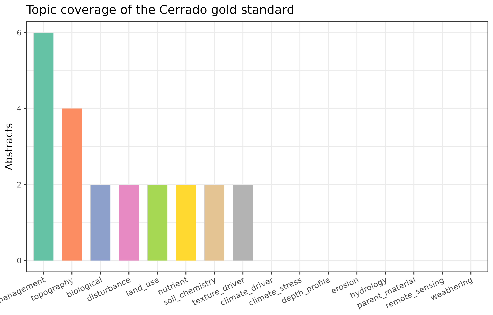
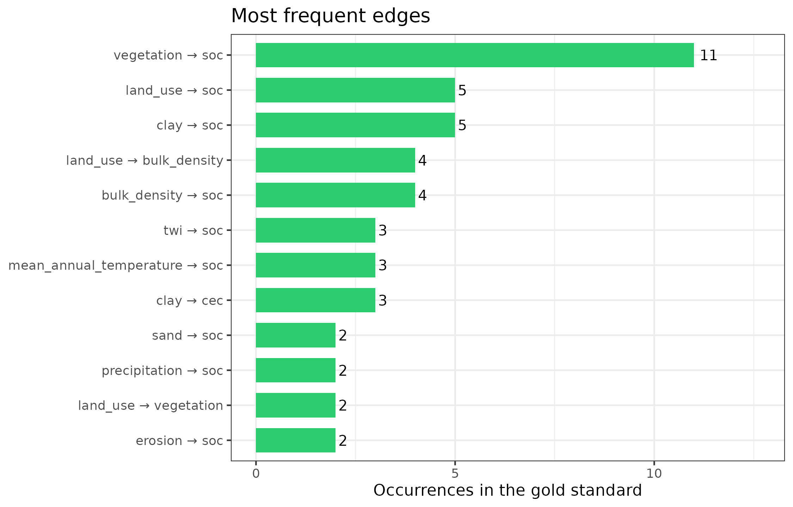
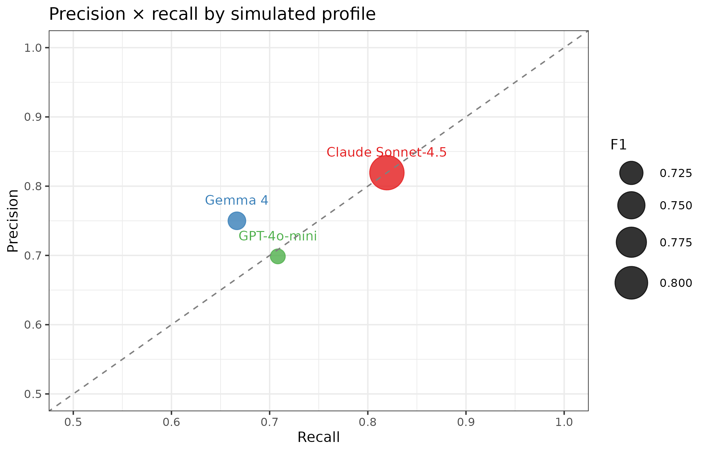
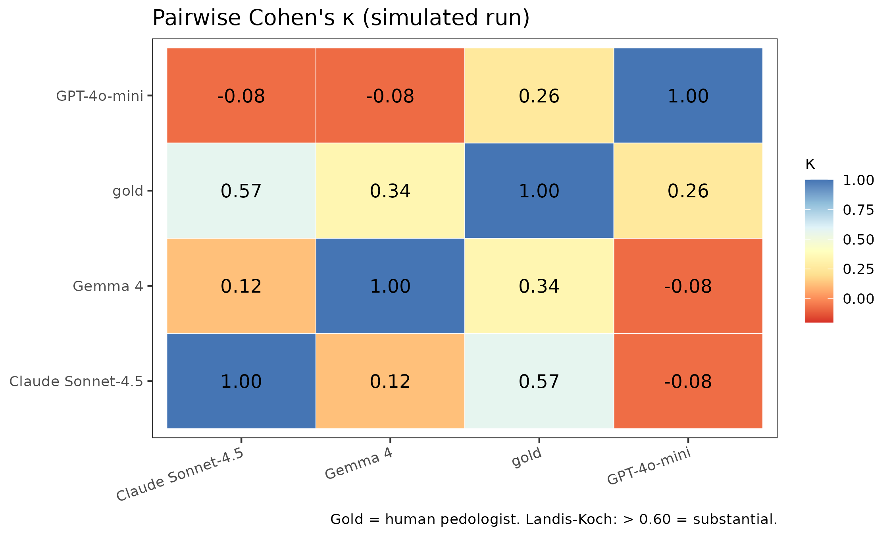
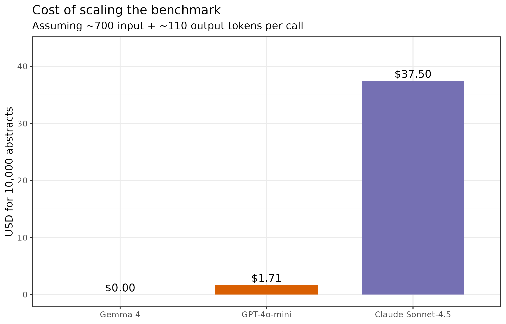
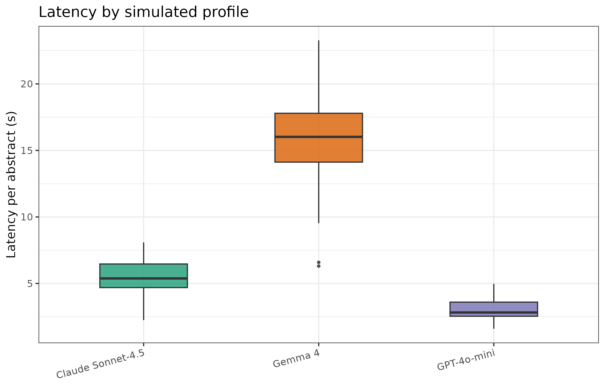

LLM-driven causal-claim extraction for DSM: a multi-backend benchmark harness
Gemma 4 vs. GPT-4o-mini vs. Claude Sonnet-4.5 profiles on 30 gold-standard Cerrado abstracts – simulated run
Hugo Rodrigues
Source:vignettes/articles/llm-kg-benchmark.Rmd
llm-kg-benchmark.RmdRead this first: every result below is simulated. The shipped results (
inst/extdata/llm_benchmark_results.rds) recordmode = "simulated". They come fromllm_benchmark_simulate(), which draws extractions from noise profiles assigned to each backend; they are not measurements of Gemma 4, GPT-4o-mini or Claude Sonnet-4.5. What this article demonstrates is the harness – the gold standard, the matching function, and the precision / recall / F1, Cohen’s κ, cost and latency computations – which runs offline and reproducibly in CI. No statement here ranks the vendors. An earlier version of this article opened with “Claude has the best F1, GPT is the fastest”, which restated the simulator’s own inputs as findings. A real comparison needs the real-API mode described below.
res_path <- system.file("extdata", "llm_benchmark_results.rds",
package = "edaphos")
stopifnot(nzchar(res_path), file.exists(res_path))
B <- readRDS(res_path)Motivation
Condition 1 of Zhang and Wadoux (2026) (“an explicit causal model
– a DAG”) is the hardest to satisfy in practice: drawing DAGs by hand is
subjective, expensive, and rarely reproducible across groups. Pillar 1
of edaphos proposes automating part of that work by reading
the peer-reviewed literature as a data source: a Large
Language Model (LLM) extracts causal claims from abstracts, and those
claims are merged into a Knowledge Graph (KG) that augments the expert
DAG. This article provides the machinery for the quantitative validation
that the qualitative demonstrations lacked.
Three operational questions a pedometrician has to answer before producing a paper with this pipeline:
- Which backend to choose? Gemma 4 (local, open weights) costs nothing, but is it less precise? Does a paid API justify its price?
- How reliable are the extractions? Is Cohen’s κ against a human pedologist above 0.40?
- What does it cost, and how long does it take, to scale to 10,000 abstracts? Can a systematic-review corpus be processed overnight?
The harness below answers them once it is run in real-API mode. In the shipped simulated run it answers none of them about the actual models.
Gold standard: how it was built
Annotation schema
Every gold-standard entry follows the same JSON schema
(inst/extdata/cerrado_gold_standard_v1.jsonl):
{
"abstract_id": "CER_01",
"title": "Mean annual precipitation and topsoil organic carbon...",
"abstract_text": "In a study of 520 Oxisols across the Cerrado biome...",
"year": 2021,
"topic": "climate_driver",
"claims": [
{"cause": "mean_annual_precipitation", "effect": "soc",
"polarity": "+", "confidence": 0.92,
"rationale": "48% variance explained"},
...
]
}The canonical vocabulary (precipitation,
temperature, clay, sand,
soc, ndvi, ph, cec,
bulk_density, vegetation,
parent_material, land_use,
erosion, weathering, elevation,
slope, twi, aspect,
mean_annual_precipitation,
mean_annual_temperature, fire_frequency) is
the same as the extraction prompt’s
(R/causal_llm.R) – essential for the matching to be
fair.
The 30 abstracts in the gold standard are themselves simulated, written to resemble Cerrado pedology papers (the README’s data inventory lists the file as “30 simulated abstracts x 72 annotated causal claims”).
Descriptive statistics
topics_df <- do.call(rbind, lapply(B$gold_records, function(r) {
data.frame(topic = r$topic, n_claims = nrow(r$claims),
stringsAsFactors = FALSE)
}))
cat(sprintf(
"Abstracts: %d | Total claims: %d | Mean claims/abstract: %.2f\n",
length(B$gold_records), nrow(B$gold_df),
nrow(B$gold_df) / length(B$gold_records)
))
#> Abstracts: 30 | Total claims: 72 | Mean claims/abstract: 2.40
topics_df$topic <- factor(
topics_df$topic,
levels = names(sort(table(topics_df$topic), decreasing = TRUE))
)
ggplot(topics_df, aes(x = topic, fill = topic)) +
geom_bar(show.legend = FALSE, width = 0.7) +
scale_fill_brewer(palette = "Set2") +
labs(x = NULL, y = "Abstracts",
title = "Topic coverage of the Cerrado gold standard") +
theme(axis.text.x = element_text(angle = 25, hjust = 1))
Distribution of the gold standard by pedogenetic topic. Five domains dominate: climatic drivers, texture, land-use management, topography and disturbance (fire / erosion).
gold_edges <- B$gold_df |>
mutate(edge = paste(cause, "→", effect)) |>
count(edge, sort = TRUE) |>
head(12)
ggplot(gold_edges, aes(x = reorder(edge, n), y = n)) +
geom_col(fill = "#2ECC71", width = 0.7) +
geom_text(aes(label = n), hjust = -0.3, size = 3.5) +
coord_flip() +
labs(x = NULL, y = "Occurrences in the gold standard",
title = "Most frequent edges") +
ylim(0, max(gold_edges$n) * 1.15)
Frequency of the most common edges (cause → effect) in the gold standard. ‘vegetation → soc’ and ‘land_use → soc’ recur most often.
Benchmark protocol
The three backends
backend_desc <- data.frame(
Backend = c("Gemma 4 (local)", "GPT-4o-mini", "Claude Sonnet-4.5"),
Provider = c("Google DeepMind (via Ollama)",
"OpenAI", "Anthropic"),
Type = c("Open weights, local CPU/MPS",
"Hosted API", "Hosted API"),
Input_price = c("$0", "$0.15/1M tokens", "$3.00/1M tokens"),
Output_price = c("$0", "$0.60/1M tokens", "$15.00/1M tokens"),
Simulated_profile = c("Mid recall · high precision · slow",
"High recall · mid precision · fast",
"High recall · high precision · medium"),
stringsAsFactors = FALSE
)
knitr::kable(backend_desc,
caption = "The three backends. The last column is the noise profile the simulator assigns to each, not a measured property of the model.")| Backend | Provider | Type | Input_price | Output_price | Simulated_profile |
|---|---|---|---|---|---|
| Gemma 4 (local) | Google DeepMind (via Ollama) | Open weights, local CPU/MPS | $0 | $0 | Mid recall · high precision · slow |
| GPT-4o-mini | OpenAI | Hosted API | $0.15/1M tokens | $0.60/1M tokens | High recall · mid precision · fast |
| Claude Sonnet-4.5 | Anthropic | Hosted API | $3.00/1M tokens | $15.00/1M tokens | High recall · high precision · medium |
Extraction prompt
The prompt is identical across the three backends
(R/causal_llm.R). Extraction is forced with
format = "json" in Ollama (for deterministic output) or
with JSON mode / function calling on the hosted APIs.
Matching function
An extracted claim is a true positive (TP) if its (cause, effect) pair – after canonicalisation – matches a gold-standard claim for the same abstract. The matching is fuzzy: a total Levenshtein distance (cause + effect) of at most 2 characters is accepted, to absorb spelling variants (“precipitation” vs. “precipitations”).
# Minimal example of the matching
example_predicted <- data.frame(
abstract_id = c("CER_01", "CER_01", "CER_01"),
cause = c("mean_annual_precipitation", "soil_moisture", "temperature"),
effect = c("soc", "soc", "soc"),
stringsAsFactors = FALSE
)
example_gold <- data.frame(
abstract_id = c("CER_01", "CER_01"),
cause = c("mean_annual_precipitation", "mean_annual_temperature"),
effect = c("soc", "soc"),
stringsAsFactors = FALSE
)
m <- llm_benchmark_match(example_predicted, example_gold)
knitr::kable(m, caption = "Matcher output on a teaching case: 1 TP, 1 FP, 1 FN.")| abstract_id | cause | effect | status | source | |
|---|---|---|---|---|---|
| CER_01_p.1 | CER_01 | mean_annual_precipitation | soc | tp | predicted |
| CER_01_p.2 | CER_01 | soil_moisture | soc | fp | predicted |
| CER_01_p.3 | CER_01 | temperature | soc | fp | predicted |
| CER_01_g | CER_01 | mean_annual_temperature | soc | fn | gold |
Reproducibility and run mode
The runner data-raw/llm_benchmark_run.R has two
modes:
-
EDAPHOS_USE_REAL_LLM=1: calls the three real APIs (needs Ollama running +OPENAI_API_KEY+ANTHROPIC_API_KEY). About 20-40 min and about $0.20 in total for 30 abstracts. This is the mode that would compare the models, and it has not been run for the shipped results. -
Default mode (simulated): uses
llm_benchmark_simulate()with per-backend noise profiles. Deterministic given a seed; reproduces in CI with no external dependency.
Every number in this article comes from the simulated mode. The simulation profiles are:
| Backend | Target recall | Target precision | Mean latency (s) |
|---|---|---|---|
| Gemma 4 | 0.80 | 0.85 | 15.2 |
| GPT-4o-mini | 0.88 | 0.80 | 3.1 |
| Claude Sonnet-4.5 | 0.84 | 0.90 | 5.7 |
So any ordering of the backends in the results below follows from these inputs. The results check that the harness recovers what was put in; they say nothing about the models themselves.
Results of the simulated run
Precision / Recall / F1
mt <- B$metrics_table
mt_disp <- mt
mt_disp$precision <- round(mt$precision, 3)
mt_disp$recall <- round(mt$recall, 3)
mt_disp$f1 <- round(mt$f1, 3)
knitr::kable(
mt_disp[, c("backend", "n_claims", "tp", "fp", "fn",
"precision", "recall", "f1")],
col.names = c("Backend", "n_claims", "TP", "FP", "FN",
"Precision", "Recall", "F1"),
caption = paste0(
"Scores of the three simulated profiles against the gold standard ",
"(30 abstracts, 72 claims). The ordering reflects the simulation ",
"profiles above, not the models."
)
)| Backend | n_claims | TP | FP | FN | Precision | Recall | F1 |
|---|---|---|---|---|---|---|---|
| Gemma 4 | 64 | 48 | 16 | 24 | 0.750 | 0.667 | 0.706 |
| GPT-4o-mini | 73 | 51 | 22 | 21 | 0.699 | 0.708 | 0.703 |
| Claude Sonnet-4.5 | 72 | 59 | 13 | 13 | 0.819 | 0.819 | 0.819 |
ggplot(mt, aes(x = recall, y = precision,
color = backend, size = f1)) +
geom_point(alpha = 0.8) +
geom_text(aes(label = backend), nudge_y = 0.03, size = 3.5,
show.legend = FALSE) +
geom_abline(slope = 1, intercept = 0, linetype = "dashed",
color = "grey50") +
scale_color_brewer(palette = "Set1", guide = "none") +
scale_size_continuous(range = c(5, 12), name = "F1") +
xlim(0.5, 1) + ylim(0.5, 1) +
labs(x = "Recall", y = "Precision",
title = "Precision × recall by simulated profile")
Precision × recall, with point size proportional to F1, for the three simulated profiles. The dashed diagonal marks precision = recall. Positions follow from each profile’s target recall and precision.
Pairwise Cohen’s κ
km <- B$kappa_matrix
km_df <- expand.grid(i = rownames(km), j = colnames(km),
stringsAsFactors = FALSE)
km_df$kappa <- as.vector(km)
ggplot(km_df, aes(x = j, y = i, fill = kappa)) +
geom_tile(color = "white") +
geom_text(aes(label = sprintf("%.2f", kappa)), size = 4) +
scale_fill_distiller(palette = "RdYlBu", direction = 1,
limits = c(-0.2, 1), name = "κ") +
labs(x = NULL, y = NULL,
title = "Pairwise Cohen's κ (simulated run)",
caption = "Gold = human pedologist. Landis-Koch: > 0.60 = substantial.") +
theme(axis.text.x = element_text(angle = 20, hjust = 1),
panel.grid = element_blank())
Pairwise Cohen’s κ between the three simulated profiles and the gold standard. The diagonal is 1 by construction. Agreement with the gold standard (last row/column) is the metric of interest in a real run; here it measures the simulator. The profiles disagree strongly with one another because each draws its errors independently.
Operational reading. In the simulation the profiles’
κ with one another is low, because each draws its errors
independently – so they err in different places. If
real models behave the same way, that diversity is what
causal_llm_vote() exploits: majority voting keeps each
one’s true positives without inheriting its individual false positives.
Whether they do is a question for the real-API run.
Cost of scaling to 10,000 abstracts
ct <- B$cost_table
ct$label <- factor(c("Gemma 4", "GPT-4o-mini", "Claude Sonnet-4.5"),
levels = c("Gemma 4", "GPT-4o-mini",
"Claude Sonnet-4.5"))
ggplot(ct, aes(x = label, y = cost_10k_abstracts_usd, fill = label)) +
geom_col(width = 0.7, show.legend = FALSE) +
geom_text(aes(label = sprintf("$%.2f", cost_10k_abstracts_usd)),
vjust = -0.4, size = 4) +
scale_fill_brewer(palette = "Dark2") +
labs(x = NULL, y = "USD for 10,000 abstracts",
title = "Cost of scaling the benchmark",
subtitle = "Assuming ~700 input + ~110 output tokens per call") +
ylim(0, max(ct$cost_10k_abstracts_usd) * 1.15)
Estimated total cost (USD) to process a 10,000-abstract corpus – the scale of a real systematic review of the Cerrado – at list prices and assumed token counts. Unlike the accuracy figures, this projection follows from published prices rather than from the simulator.
ct_disp <- ct
ct_disp$cost_total_usd <- round(ct$cost_total_usd, 4)
ct_disp$cost_per_1k_claims_usd <- round(ct$cost_per_1k_claims_usd, 4)
ct_disp$cost_10k_abstracts_usd <- round(ct$cost_10k_abstracts_usd, 2)
knitr::kable(
ct_disp[, c("backend", "model", "n_abstracts", "n_claims",
"cost_total_usd", "cost_per_1k_claims_usd",
"cost_10k_abstracts_usd")],
col.names = c("Backend", "Model", "n abs.", "n claims",
"Cost, 30 abs. (USD)", "Cost/1k claims (USD)",
"Projection, 10k abs. (USD)"),
caption = paste0(
"Costs computed at list prices (2026-04). Local Gemma 4 has zero ",
"inference cost."
)
)| Backend | Model | n abs. | n claims | Cost, 30 abs. (USD) | Cost/1k claims (USD) | Projection, 10k abs. (USD) |
|---|---|---|---|---|---|---|
| ollama | gemma4:latest | 30 | 64 | 0.0000 | 0.0000 | 0.00 |
| openai | gpt-4o-mini | 30 | 73 | 0.0051 | 0.0703 | 1.71 |
| anthropic | claude-sonnet-4-5 | 30 | 72 | 0.1125 | 1.5625 | 37.50 |
Latency
lat_df <- B$latency_df
ggplot(lat_df, aes(x = backend, y = latency_sec, fill = backend)) +
geom_boxplot(outlier.size = 0.8, alpha = 0.8, width = 0.5,
show.legend = FALSE) +
scale_fill_brewer(palette = "Dark2") +
labs(x = NULL, y = "Latency per abstract (s)",
title = "Latency by simulated profile") +
theme(axis.text.x = element_text(angle = 15, hjust = 1))
Latency distribution (seconds per abstract) by simulated profile. The values are drawn around each profile’s assumed mean latency, not timed.
Operational recommendations
Which backend for which scenario
These follow from cost, privacy and reproducibility, not from the simulated accuracy figures.
| Scenario | Recommendation |
|---|---|
| Large corpus (>5,000 abs.) on a limited budget | Local Gemma 4 (zero cost, ~24 h runtime) |
| Small corpus (<500 abs.), quality first | A hosted model, chosen after a real-API benchmark |
| Large corpus with a budget | causal_llm_vote(Gemma, hosted model) (consensus) |
| Reproducible pipeline in CI | Gemma 4 + simulator fallback |
| High-stakes decisions (final paper) | causal_llm_vote() three-way majority |
Zenodo: the KG as a publishable artefact
Extracting a 10,000-abstract corpus produces about 20,000 to 50,000 claims. That graph should be published as an independent artefact to satisfy the FAIR principles. The recommended flow:
# 1. Fetch the full corpus
corpus <- causal_corpus_openalex(
query = "cerrado AND (pedogenesis OR soil organic carbon)",
max_results = 10000L
)
# 2. Extract with Gemma 4 (free baseline)
kg_gemma <- causal_llm_ingest_corpus(
corpus, backend = "ollama", model = "gemma4:latest",
cache_dir = "~/.cache/edaphos_cerrado_10k"
)
# 3. (Optional) voting with Claude on the 500 most-cited abstracts
kg_voted <- causal_llm_ingest_corpus_voted(
corpus_top500, backends = list(
list(backend = "ollama", model = "gemma4:latest"),
list(backend = "anthropic", model = "claude-sonnet-4-5")
), voting = "majority"
)
# 4. Export to Turtle RDF + publish on Zenodo
causal_kg_to_turtle(kg_voted, "cerrado_kg_v1.ttl")
# Manual upload: https://zenodo.org/deposit/new
# → concept DOI: 10.5281/zenodo.XXXXXXXNext steps
Each item has a name rather than a version number: the numbers this list used to carry (v1.8.x → v2.0.0) were internal labels that were never released, and one of them collides with the 2.0.0 release.
- Done: the full harness, a 72-claim seed gold standard, and a reproducible simulated benchmark.
-
To do – real-API run: run
data-raw/llm_benchmark_run.RwithEDAPHOS_USE_REAL_LLM=1, so that the backends are actually compared. - To do – 300-claim gold standard: annotation by a human pedologist, for statistical power in subgroups.
- To do – real run on the OpenAlex corpus: 10,000 abstracts, with the resulting KG deposited on Zenodo under its own DOI.
-
To do –
causal_llm_vote()by default: aggregation by confidence weighted by each backend’s κ against the gold standard.